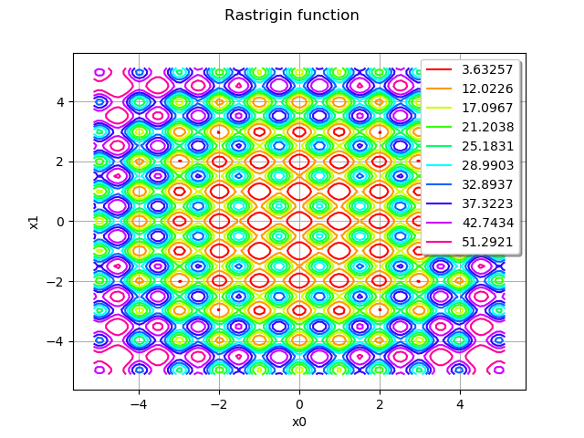
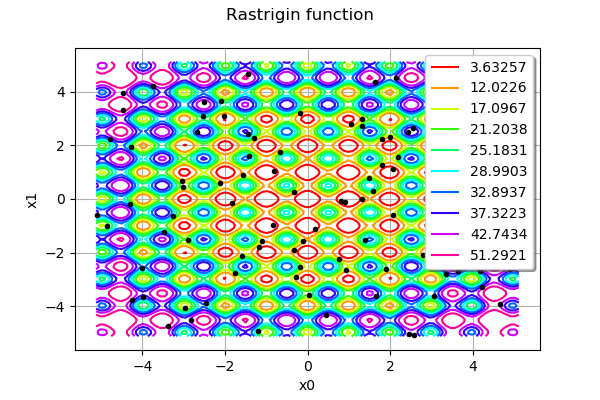
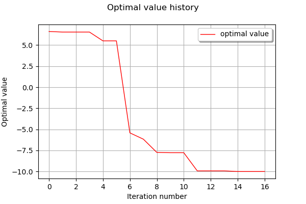
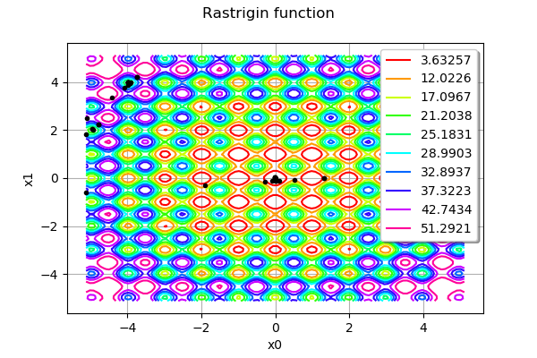

Optimization of the Rastrigin test function¶
The Rastrigin function is defined by:
![f(\mathbf{x}) = A + \sum_{i=1}^n \left[x_i^2 - A\cos(2 \pi x_i)\right]](../../_images/math/02471d16fd9665dc21ab673a394c4444dd3e0db4.svg)
where  and
and ![\mathbf{x}\in[-5.12,5.12]^n](../../_images/math/b7b5bbe040f54c98d3ab47a893c7becc1684c10e.svg) .
.
It has a global minimum at  where
where  .
.
This function has several local minimas. This is why we use the Multistart algorithm. In our example, we consider the bidimensional case, i.e.  .
.
Reference:
Rastrigin, L. A. “Systems of extremal control.” Mir, Moscow (1974).
Rudolph. “Globale Optimierung mit parallelen Evolutionsstrategien”. Diplomarbeit. Department of Computer Science, University of Dortmund, July 1990.
Definition of the problem¶
[1]:
import openturns as ot
import numpy as np
[2]:
def rastriginPy(X):
A = 10.0
delta = [x**2 - A * np.cos(2 * np.pi * x) for x in X]
y = A + sum(delta)
return [y]
[3]:
rastriginPy([1.0, 1.0])
[3]:
[-8.0]
[4]:
dim = 2
[5]:
rastrigin = ot.PythonFunction(dim, 1, rastriginPy)
[6]:
lowerbound = [-5.12] * dim
upperbound = [5.12] * dim
bounds = ot.Interval(lowerbound, upperbound)
[7]:
xexact = [0.0] * dim
Plot the iso-values of the objective function¶
[8]:
rastrigin = ot.MemoizeFunction(rastrigin)
[9]:
graph = rastrigin.draw(lowerbound, upperbound, [100]*dim)
graph.setTitle("Rastrigin function")
graph
[9]:

We see that the Rastrigin function has several local minimas. However, there is only one single global minimum at  .
.
Define the starting points¶
The starting points are computed from Uniform distributions in the input domain. We consider a set of 100 starting points.
[10]:
U = ot.Uniform(-5.12, 5.12)
distribution = ot.ComposedDistribution([U]*dim)
[11]:
size = 100
startingPoints = distribution.getSample(size)
[12]:
graph = rastrigin.draw(lowerbound, upperbound, [100]*dim)
graph.setTitle("Rastrigin function")
cloud = ot.Cloud(startingPoints)
cloud.setPointStyle("bullet")
cloud.setColor("black")
graph.add(cloud)
graph
[12]:

We see that the starting points are randomly chosen in the input domain of the function.
Create and solve the optimization problem¶
[13]:
problem = ot.OptimizationProblem(rastrigin)
problem.setBounds(bounds)
[14]:
solver = ot.TNC(problem)
[15]:
algo = ot.MultiStart(solver, startingPoints)
algo.run()
result = algo.getResult()
[16]:
xoptim = result.getOptimalPoint()
xoptim
[16]:
[-2.40017e-13,4.84564e-10]
[17]:
xexact
[17]:
[0.0, 0.0]
We can see that the solver found a very accurate approximation of the exact solution.
[18]:
result.getEvaluationNumber()
[18]:
17
[19]:
inputSample = result.getInputSample()
[20]:
graph = rastrigin.draw(lowerbound, upperbound, [100]*dim)
graph.setTitle("Rastrigin function")
cloud = ot.Cloud(inputSample)
cloud.setPointStyle("bullet")
cloud.setColor("black")
graph.add(cloud)
graph
[20]:
We see that the algorithm evaluated the function more often in the neighbourhood of the solution.
[21]:
result.drawOptimalValueHistory()
[21]:

[22]:
rastrigin.getEvaluationCallsNumber()
[22]:
54
In order to see where the rastrigin function was evaluated, we use the getInputHistory method.
[23]:
inputSample = rastrigin.getInputHistory()
[24]:
graph = rastrigin.draw(lowerbound, upperbound, [100]*dim)
graph.setTitle("Rastrigin function")
cloud = ot.Cloud(inputSample)
cloud.setPointStyle("bullet")
cloud.setColor("black")
graph.add(cloud)
graph
[24]:

We see that the algorithm explored different regions of the space before finding the global minimum.